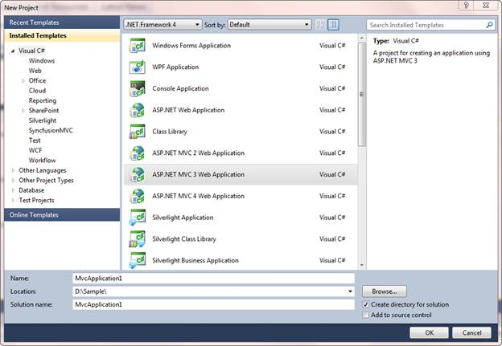
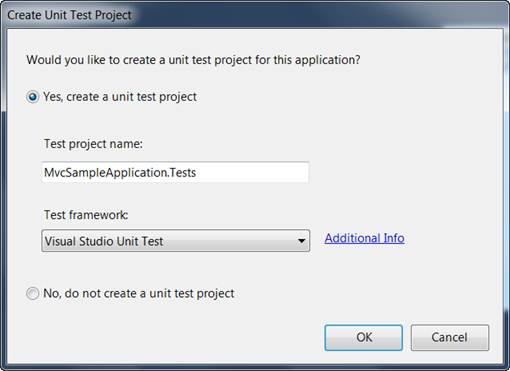
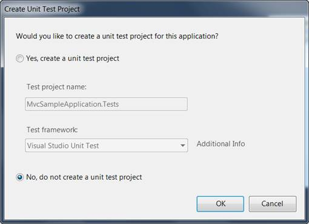

To create a platform application:
1. Create a new ASP.NET MVC project.
2. On the File menu, select New Project.
The New Project dialog box is displayed.

Figure 9: New Project Dialog Box
3. On the upper-right corner, select .NET Framework 4.0.
4. In Project types, expand either Visual Basic or Visual C#, and then click Web.
5. In Visual Studio installed templates, select ASP.NET MVC 2 Web Application.
6. In the Name field, enter the MvcSampleApplication.
7. In the Location field, enter a name for the project folder.
8. If you want the name of the solution to differ from the project name, enter a name in the Solution Name field.
9. Select Create directory for solution.
10. Click OK.
The Create Unit Test Project dialog box is displayed.

Figure 10: Create Unit Test Project Dialog Box
11. Select No and do not create a unit test project.
12. Click OK.
By default, the name of the test project is the application project name with "Tests" added. However, you can change the name of the test project. By default, the test project will use the Visual Studio Unit Test framework.
Note:The other option becomes unavailable for the selection as shown in the following image.

Figure 11: Selecting an option
13. Click OK.
The new MVC application project and a test project are generated. (If you are using the Standard or Express editions of Visual Studio, the test project is not created.)